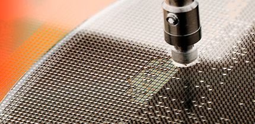

High Performance
Air Quality Sensor
가스센싱기술
엔아이디에스 가스센싱 핵심기술
- 순간 소비전력 최소화 설계 및 제어
-
저 전력 소모 설계로 배터리 효율 증대
- 뛰어난 연구진 센서개발 연구실 보유
-
정밀성높은 정확도 능력 보유
소형화, 경량화 등 제품채용시 가장 적합한 설계 가능
- 센서 교정 기술 확보
-
외부환경에 대한 보정 및 교정 기술 보유
사용자 수동 교정 기술 및 운용 처리 관련 기술
- 높은 안전성과 신뢰성
-
저잡음 회로 및 안정된 회로구성 기술로 장기적 신뢰성 유지
센서 갱년변화 최초화.
센서신뢰성 보정을 위한 최첨단 장비 보유
- 저농도 가스 검지기술 보유
-
측정 가스에 최적화된 설계기술
최대 광효율 집광 기술력
최소화 형 설계기술력
- 저전력 소모 설계를 위한 제어 설계 모드 기술 확보
-
평가보드 컨트롤 소프트웨어

GAS SENSOR 측정원리
광학식 비분산적외선(NDIR) 가스 센서
IR Dust Sensor의 작동 원리는 광학산란 방식입니다.
공기는 센서의 흡기 밸브를 통해 들어가며, 반복적으로 전환되는 적외선 LED 조명은 공기 중 먼지 입자를 센싱 합니다.
(ex. CO2는 4.26㎛ , CO는 4.64㎛의 특정 파장을 흡수)
비 접촉식으로 측정 정확성이 높음.
사용 수명이 길어 가장 우수한 가스 검지 방식으로 평가.
최근 NDIR CO2 센서의 개발과, 대량 생산으로 다양한 산업 및 환경에 적용되고 있음.
NDIR / MOS / MEMS 기술 사용
높은 정밀도
뛰어난 장기적 안정성

환경부: CO2, CO 센서를 NDIR 방식으로 측정하도록 시험법 규정
NDIR 방식의 양산보급은 가격하락으로 이어져 기존 접촉식 이산화탄소 센서의 점유율을 크게 대체하는 추세.
금속산화물반도체 (MOS) 센서
금속산화물반도체 (MOS) 센서로도 알려져 있으며, 반도체가 가스와 직접 접촉시 발생하는 화학적 상호작용에 의해
그 표면 전도전자의 밀도변화를 통해 가스를 감지하는 기술입니다.
일반적으로 4단계를 거쳐 반응합니다.
- 1
- 반도체 표면에 산소의 사전 흡착
- 2
- 특정가스의 흡착
- 3
- 흡착가스와 산소의 반응
- 4
- 반응가스의 탈착

MEMS 센서
MEMS는 Micro Electro Mechanical Systems 의 약자로 반도체 기술에 의해 만들어진
마이크로 구조체에서 센서와 액추에이터, 전자회로가 집적 된 장치입니다.

MEMS 센서 특징
높은 감도, 저전력 소비, 빠른 응답, 작은 크기, 장기적인 안정성을 제공.
가스 감지 기술 및 전용 디지털 모듈 획득 기술로 높은 신뢰성과
우수한 장기 안정성을 보장
낮은 전력 소비량, 높은 감도, 빠른 응답, 높은 신뢰성과 안정성,
낮은 비용 및 간단한 구동 회로 구축.
스마트폰, PC, 게임기 등 최신 디바이스 외에도
자동차 외부의 정보를 감지하는데 활용.

Improving Indoor Air Quality
현시대 사람들은 80-90%의 시간을 밀폐된 실내 공간에서 보내고 있습니다.
대기 중 수많은 미세 오염물질은 눈의 자극이나, 두통, 피로감 등의 증상을 야기 시키며, 사람들의 건강문제에 직접적인 영향을 미치고 있습니다.
엔아이디에스는 실내 공기의 질을 측정하고 적절범위 내 조절하는 것이 웰빙과 건강을 직접적 연결 짓는 핵심 열쇠로 여겨,
귀사 제품에 채용 시 최대효과기능을 발휘하도록 돕고 있습니다.
How to improve air quality?
환기와 정화는 깨끗한 공기를 유지하는 최선의 선택 방안이 될 것입니다.
우리 센서를 활용한 실내 공기 질 측정 데이터 값은 공기 정화 시스템을 구성하거나
환기 시스템을 현명하게 관리하는데 활용되는 귀사의 핵심 기술력이 될 것입니다.

At home
실외 공기 오염은 열린 창문이나 환기 시스템을 통해 실내로 이동합니다. 특히, 그을음, 자동차 배기가스, 꽃가루와 같은 실외 오염 물질로 노출된 실내환경은 깨끗한 공기 질 확보를 위해 관리 되어야할 항목으로 입자 센싱의 중요성은 점차 증대되었습니다. 페인트, 직물, 청소 제품 그리고 요리 냄새나 먼지 진드기 등 실내 환경 악화요소에 대한 종합적 실내 공기 질 관리는 가정 환경에서 적극 고려되어야 할 기술입니다.
HVAC
현 스마트건물이 보급되며, 실내 공기의 질을 감시하는 시스템은 빠르게 설치되어 가동되고 있습니다. 원격 컨트롤에서부터 무선 통신 및 API를 제공하는 정보는 난방, 환기 및 에어컨(HVAC)을 처리하는 전체 시스템에서 채용되어지고 있습니다.
At the Workplace
COVID-19 팬데믹 상황에서의 집단감염 사례는 직원들의 건강과 직접적인 연관성을 보여주는 작업장 공기 질 관리개선 요구의 실 사례입니다. 일반적으로 사무실의 환기율을 높여 실내 공기 질 개선을 기대할 수 있으나, 실내구조 제한 및 대기 질 사내규정 적용의 미비는 프린터에서 나오는 유해물질 또는 실외 대기오염물질로부터 직원들을 쉽게 노출되게 합니다. 특히, 습도와 온도 외에도, CO2, 휘발성 유기화합물, 미세 입자와 같은 대기 오염 물질은 사무실의 업무 수행과 복지에 영향을 미칠 수 있습니다. 직장내 실내 공기 질 관리 기술 도입에 따른 사무실 업무환경의 개선도모는 직원 간 의사 결정, 그리고 적은 결근의 결과로 이어져 높은 생산성을 도모합니다.
Dangers in indoor air
밀폐 실내 공간 내 발생하는 먼지, 곰팡이, 세균, 화학물질과 같은 대기오염물질은 밀폐된 공간에 축적되어,
우리 삶과 밀접 관련 있는 가정과 사무실의 공기 질의 부정적인 영향을 미쳐 건강상의 위험신호를 야기 시키고 있습니다.
- 이산화탄소
-
이산화탄소는 폐쇄된 공간에서는 인간의 활동 및
점유와 상관관계를 갖습니다. 특히, 높은 농도는
두통, 졸음, 무기력, 성능 저하를 일으킬 수 있어
센서를 통한 실내농도 확인 및 준수기준이 권장됩니다.
- 이산화질소
-
이산화질소는 공장, 자동차 매연 등 화석연료의
연소에 의해 생성되며 VOCs와 반응하여 오존을
일으키는 전구물질 역할을 합니다. 특히, 이산화질소의
과다 노출은 인체에 부정적 영향을 미치고 폐 기능에
부정적인 영향을 미칠 수 있습니다.
- 포름알데히드
-
포름알데히드는 목재 기반 재료, 바닥재 또는 페인트에서
접착 성분 등 공산품 생산에 다양하게 쓰이나 새집증후군의
주된 원인으로 평가됩니다. 특히, 50ppm 이상의 높은 농도에서의 노출은 눈 자극이나 심지어 암을 유발할 수 있습니다.
- 휘발성 유기 화합물
-
휘발성 유기화합물은 대기 중 탄소를 함유한 물질로
단기 노출은 자극, 현기증, 천식 악화로 이어질 수 있고,
장기간 노출 시 폐암이나 간, 신장, 신경계 손상을
일으킬 수 있습니다.
- 미세먼지
-
미세먼지는 자연배출원 뿐만 아니라 여러 종류의
고정배출원 또는 이동배출원으로부터 발생되어
천식과 같은 호흡기계 질병을 악화 시키고
알레르기 반응을 유발 시킵니다.
따라서, 실내외 모두 적극적 관리지침의 마련에
따른 정밀 측정계 활용이 적극 요구됩니다.
- 온도 및 습도
-
온습도의 컨트롤은 인간이 살아가는 최적 환경을 컨트롤
하는데 중요한 요소입니다. 인체는 40-60%의 습도 범위에서
가장 편안함을 느끼는 반면, 건조한 공기가 호흡기를 자극하고
습한 공기는 응결로 이어져 곰팡이 침입의 방아쇠가
될 수 있습니다.